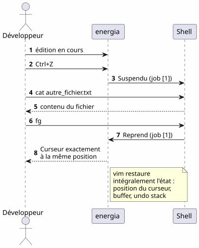
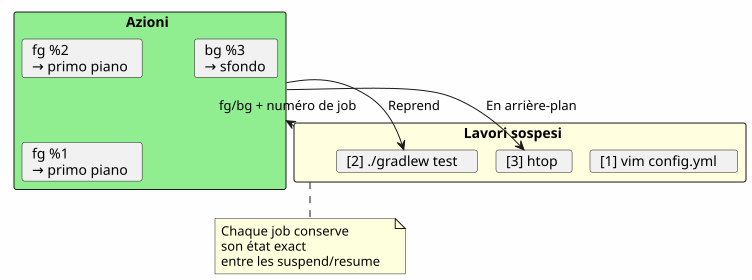
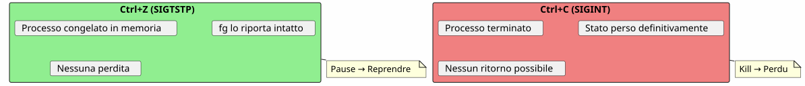
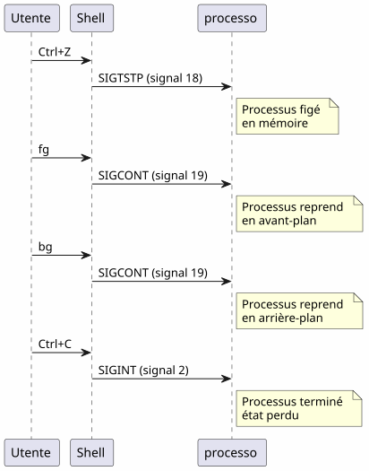

Il super suggerimento del comando fg : quando Ctrl+Z salva la tua sessione terminale
Publié le 18 April 2026
- Il problema: un terminale occupato
- I tre comandi indispensabili
- Scenario 1 : La build lunga
- Scenario 2: L’editore dimenticato
- Scenario 3 : Il processo opencode sospeso
- Scenario 4: Gestire più job contemporaneamente
- Differenze tra fg, bg, Ctrl+Z, Ctrl+C e &
- Il ciclo di vita completo di un job
- Consigli avanzati
- Trappole ed errori comuni
- Diagramma riassuntivo
- Perché fg è sottovalutato
- Bake (generate) the site jbake -b
- Bake and serve locally jbake -b -s
- Bake and watch for changes jbake -b --reset
- Specify source and destination jbake source_folder output_folder
- Clear the output directory before baking jbake -b . output --reset
`è :
Lei lancia`./gradlew build`, il terminale è bloccato per 3 minuti, e hai bisogno di fare qualcos’altro in attesa ? Non c’è bisogno di aprire una nuova scheda.`Ctrl+Z`sospende il processo,`fg`Lo riporta esattamente dove l’hai lasciato. È il consiglio Unix più sottovalutato nella quotidianità di uno sviluppatore.
- indice
-
[]
Il problema: un terminale occupato
Ogni sviluppatore ha conosciuto questa situazione:
$ ./gradlew build
> Building...Il terminale è bloccato. Non puoi più digitare alcun comando. E hai bisogno di consultare un file, avviare un`git status`, o verificare una porta occupata.
Failed to generate image: PlantUML preprocessing failed: [From <input> (line 6) ] @startuml skinparam backgroundColor #FEFEFE actor Développeur as dev participant "Terminale" as term participant "Gradle ^^^^^ Syntax Error? (Assumed diagram type: sequence) @startuml skinparam backgroundColor #FEFEFE actor Développeur as dev participant "Terminale" as term participant "Gradle ( processo )" as gradle dev -> term : ./gradlew build term -> gradle : Lance le build gradle -> term : Occupe le terminal\n(pas de prompt) dev -> term : veut taper une commande term --> dev : ❌ Terminal bloqué note right of dev Le développeur est paralysé pendant toute la durée du build end note @enduml
La maggior parte degli sviluppatori apre un nuovo terminale. Ma esiste una soluzione più elegante, più veloce e nativa: la gestione dei job.
I tre comandi indispensabili
Ctrl+Z — Sospendere (SIGTSTP)
`Ctrl+Z`invia il segnale`SIGTSTP`al processo in primo piano. Il processo èsospeso— non ucciso — e il terminale riprende il suo prompt.
$ ./gradlew build
> Building...
^Z
[1]+ Stoppé ./gradlew build
$Il numero tra parentesi quadre`[1]` est le numero di lavoro. Le `+`indica il lavoro predefinito.
fg — Riprendere in primo piano
`fg`riporta il lavoro sospeso in primo piano. Il processo riprende esattamente dove si era interrotto.
$ fg
./gradlew build
> Building... (reprend où il en était)Con un numero di lavoro specifico :
$ fg %2bg — Riprendere in background
`bg`Riprende il processo senza bloccare il terminale. Ideale per i build lunghi.
$ bg
[1]+ ./gradlew build &
$Le `&`alla fine significa che il processo è in esecuzione in secondo piano.
jobs — Elencare i job della shell
$ jobs
[1]- Stoppé vim README.md
[2]+ En cours ./gradlew buildFailed to generate image: PlantUML preprocessing failed: [From <input> (line 5) ] @startuml skinparam backgroundColor #FEFEFE skinparam defaultFontName sans-serif state "Primo piano ^^^^^ Syntax Error? (Assumed diagram type: sequence) @startuml skinparam backgroundColor #FEFEFE skinparam defaultFontName sans-serif state "Primo piano (terminale bloccato)" as fg #LightCoral state "Sospeso (Ctrl+Z)" as stopped #LightYellow state "Sfondo\n(bg)" as bg_ #LightGreen [*] --> fg : Lance une commande fg --> stopped : Ctrl+Z\n(SIGTSTP) stopped --> fg : fg\nreprend en avant-plan stopped --> bg_ : bg\nreprend en arrière-plan bg_ --> fg : fg\nramène en avant-plan fg --> [*] : Commande terminée note right of stopped Le processus est figé mais _pas_ tué end note note left of bg_ Le terminal est libre le build continue end note @enduml
Scenario 1 : La build lunga
È il caso d’uso più comune. Avvii un build Gradle, il terminale è bloccato, e hai bisogno di fare altro.
Failed to generate image: PlantUML preprocessing failed: [From <input> (line 8) ] @startuml skinparam backgroundColor #FEFEFE autonumber actor Développeur as dev participant "terminale" as term participant "Gradle" as gradle database "Stato ^^^^^ Syntax Error? (Assumed diagram type: sequence) @startuml skinparam backgroundColor #FEFEFE autonumber actor Développeur as dev participant "terminale" as term participant "Gradle" as gradle database "Stato processo" as state dev -> term : ./gradlew build term -> gradle : Lance le build gradle -> state : En cours (FG) dev -> term : Ctrl+Z term -> state : Suspendu (job [1]) term --> dev : Prompt libre $ dev -> term : git status term --> dev : working tree clean dev -> term : fg term -> state : Reprend (FG) gradle --> dev : Build réussi ✓ note right of state Le processus Gradle n'a jamais été tué Il reprend exactement où il s'était arrêté end note @enduml
Passo a passo
$ ./gradlew build
> Building...
^Z
[1]+ Stoppé ./gradlew build
$ git status
On branch main
nothing to commit, working tree clean
$ fg
./gradlew build
> Building...
BUILD SUCCESSFUL in 2m 34sScenario 2: L’editore dimenticato
Sei in`vim`, hai bisogno di consultare un altro file senza uscire`vim`.
# Dans vim, en mode commande :
:shell
$ cat /path/to/other/file.txt
$ exit
# Retour dans vimMa è pesante. Con`Ctrl+Z`, è immediato :
# Dans vim, n'importe quel moment :
Ctrl+Z
[1]+ Stoppé vim README.md
$ cat /path/to/other/file.txt
# ... lire le fichier ...
$ fg
vim README.md
# Retour exact là où on en était, curseur en place
(no output)vim`ripristina perfettamente il suo stato dopo un`fg: posizione del cursore, contenuto del buffer, cronologia delle annullazioni — tutto è preservato.
Scenario 3 : Il processo opencode sospeso
È lo scenario che ha motivato questo articolo. Lei utilizza`opencode`(strumento CLI per pilotare un LLM sul tuo codice), e il processo è sospeso.
Failed to generate image: PlantUML preprocessing failed: [From <input> (line 7) ] @startuml skinparam backgroundColor #FEFEFE skinparam defaultFontName sans-serif skinparam componentStyle rectangle actor Développeur as dev participant "opencode ^^^^^ Syntax Error? (Assumed diagram type: sequence) @startuml skinparam backgroundColor #FEFEFE skinparam defaultFontName sans-serif skinparam componentStyle rectangle actor Développeur as dev participant "opencode (agente LLM)" as agent participant "Shell" as shell participant "git" as git dev -> agent : Session active agent -> agent : Tour de parole\ndu LLM en cours note over agent Ctrl+Z arrive en plein milieu d'une analyse de code end note dev -> agent : Ctrl+Z agent -> shell : Suspendu (job [1]) dev -> git : git diff git --> dev : changements visibles dev -> shell : fg shell -> agent : Reprend (job [1]) agent --> dev : Reprend exactement\nl'analyse en cours note right of agent Aucune perte de contexte Le LLM reprend sa réponse exactement où il en était end note @enduml
$ opencode
# ... session en cours, LLM analyse le code ...
^Z
[1]+ Stoppé opencode
$ git diff HEAD~1
# vérifier les changements récents
$ fg
opencode
# Le LLM reprend là où il s'était arrêtéIl vantaggio è doppio :
-
Nessuna perdita di contesto : la session LLM, l’historique de conversation, les fichiers ouverts — tout est préservé
-
Nessun riavvio: non è necessario rilanciare opencode, ricaricare il contesto, spiegare nuovamente il problema al LLM
Scenario 4: Gestire più job contemporaneamente
fg et `bg`accettano un numero di job per mirare a un processo specifico quando più processi sono sospesi
$ vim config.yml
^Z
[1]+ Stoppé vim config.yml
$ ./gradlew test
^Z
[2]+ Stoppé ./gradlew test
$ htop
^Z
[3]+ Stoppé htop
$ jobs
[1] Stoppé vim config.yml
[2]- Stoppé ./gradlew test
[3]+ Stoppé htop
$ fg %2
./gradlew test
# Le build reprend en avant-plan
$ bg %3
[3] htop &
# htop reprend en arrière-plan
Riepilogo dei comandi di lavoro
| Ordine | effetto | Esempio |
|---|---|---|
|
Sospende il processo in primo piano |
Invio di`SIGTSTP` |
|
Riprendi il lavoro predefinito in primo piano |
|
|
Riprende il lavoro n in primo piano |
|
|
Riprende il job di default in background |
|
|
Riprendi il lavoro n in secondo piano |
|
|
Elenca i job della shell corrente |
|
|
Termina il lavoro n |
|
Differenze tra fg, bg, Ctrl+Z, Ctrl+C e &
Molti sviluppatori confondono questi meccanismi. Ecco una chiarificazione decisiva.
Failed to generate image: PlantUML preprocessing failed: [From <input> (line 11) ]
@startuml
skinparam backgroundColor #FEFEFE
skinparam defaultFontName sans-serif
rectangle "**Ctrl+Z**\nSIGTSTP" as ctrlz #LightYellow {
card "Sospendi il processo\n(e è sempre in memoria)\nUtilizzabile con fg/bg" as c1
}
rectangle "**Ctrl+C**\nSIGINT" as ctrlc #LightCoral {
card "Uccidi il processo
(nessun ritorno possibile)
^^^^^
Syntax Error? (Assumed diagram type: activity)
@startuml
skinparam backgroundColor #FEFEFE
skinparam defaultFontName sans-serif
rectangle "**Ctrl+Z**\nSIGTSTP" as ctrlz #LightYellow {
card "Sospendi il processo\n(e è sempre in memoria)\nUtilizzabile con fg/bg" as c1
}
rectangle "**Ctrl+C**\nSIGINT" as ctrlc #LightCoral {
card "Uccidi il processo
(nessun ritorno possibile)
Perdita di tutto lo stato" as c2
}
rectangle "& **\n(sfondo)" as ampersand #LightGreen {
card "Avvia direttamente
in background
Terminale libero immediatamente" as c3
}
rectangle "**fg**
(primo piano)" as fg_ #SkyBlue {
card "Riprendi un lavoro
sospeso in primo piano
Terminale occupato" as c4
}
rectangle "**bg**
(sfondo)" as bg_ #Lavender {
card "Riprendi un job
sospeso in secondo piano
Terminale libero" as c5
}
ctrlz -right-> fg_ : fg pour reprendre
ctrlz -right-> bg_ : bg pour continuer\nen arrière-plan
ctrlc -right-> c2 : Pas de retour\nprocessus tué
note bottom of ctrlz
Le processus est **figé**
mais **pas tué**
end note
note bottom of ampersand
Alternative : lancer
./gradlew build &
directement en arrière-plan
end note
@enduml
| Scorciatoia/Comando | Segnale | Effetto | Ctrl+Z |
|---|---|---|---|
|
Sospendi il processo (congelato, in memoria) |
Sì :`fg` ou |
|
|
Uccidi il processo (terminato) |
No: processo distrutto |
|
|
Uccidi il processo + core dump |
No: processo distrutto |
|
Ctrl+Z est non-distruttivo. Il processo è congelato così com’è, nella memoria. Puoi riprendere immediatamente con`fg`. È una pause, non uno stop.
|
Il ciclo di vita completo di un job
Failed to generate image: PlantUML preprocessing failed: [From <input> (line 7) ] @startuml skinparam backgroundColor #FEFEFE skinparam defaultFontName sans-serif title Ciclo di vita completo di un job shell state "Inesistente" as none state "Primo piano ^^^^^ Syntax Error? (Assumed diagram type: state) @startuml skinparam backgroundColor #FEFEFE skinparam defaultFontName sans-serif title Ciclo di vita completo di un job shell state "Inesistente" as none state "Primo piano (occupa il terminale)" as foreground #LightCoral state "Sospeso\n(Ctrl+Z / SIGTSTP)" as suspended #LightYellow state "Sfondo (bg o &)" as background #LightGreen state "Terminato\n(exit code 0)" as done #LightGray [*] --> none none --> foreground : tape une commande foreground --> suspended : Ctrl+Z foreground --> done : fin normale suspended --> foreground : fg suspended --> background : bg suspended --> done : kill %n background --> foreground : fg background --> done : fin normale\n(en arrière-plan) background --> suspended : Ctrl+Z\n(si fg puis Ctrl+Z) done --> [*] note right of suspended L'état suspendu est le pivot de tout le système de jobs end note @enduml
Consigli avanzati
fg con il lavoro più recente e l’alternanza
fg`senza argomento riporta il lavoro marcato+(il più recente). Ma puoi anche usare%-`per prendere di mira il lavoro precedente :
$ vim file1.txt
^Z
[1]+ Stoppé vim file1.txt
$ vim file2.txt
^Z
[2]+ Stoppé vim file2.txt
$ fg # ramène job [2] (le plus récent)
$ fg %- # ramène job [1] (le précédent)uccidere un job correttamente
$ jobs
[1]- Stoppé vim config.yml
[2]+ Stoppé ./gradlew test
$ kill %2 # envoie SIGTERM au job 2
$ kill -9 %1 # envoie SIGKILL au job 1 (force)désown: rimuovere dalla shell
disown`rimuove un lavoro dalla tabella dei lavori della shell. Il processo continua a girare ma non può più essere riportato indietro con`fg(No output)
$ ./gradlew build &
[1] 12345
$ disown %1
# Le processus continue mais n'est plus lié au shell
# Ça survives à la fermeture du terminalCombinare con nohup per i processi lunghi
Perché un processo sopravviva alla chiusura del terminale :
$ nohup ./gradlew build &
[1] 12345
$ disown %1
# Le build continue même si vous fermez le terminalFailed to generate image: PlantUML preprocessing failed: [From <input> (line 7) ]
@startuml
skinparam backgroundColor #FEFEFE
skinparam defaultFontName sans-serif
rectangle "borgo" as fg_ #SkyBlue {
card "Porta il lavoro
il più recente (+)" as f1
^^^^^
Syntax Error? (Assumed diagram type: activity)
@startuml
skinparam backgroundColor #FEFEFE
skinparam defaultFontName sans-serif
rectangle "borgo" as fg_ #SkyBlue {
card "Porta il lavoro
il più recente (+)" as f1
card "Mira a un job
specifico : fg %n" as f2
card "Alterna : fg %-%" as f3
}
rectangle "kill %n" as kill_ #LightCoral {
card "SIGTERM (pulito)" as k1
card "SIGKILL -9 (forzato)" as k2
}
rectangle "rinnegare" as disown #Lavender {
card "Scollega dal shell\n(sopravvive alla disconnessione)" as d1
}
rectangle "nohup + &" as nohup_ #LightGreen {
card "Processo immunizzato
contro SIGHUP
(sopravvive alla chiusura
del terminal)" as n1
}
fg_ -right-> kill_ : si faut\nterminer
kill_ -right-> disown_ : ou détacher
nohup_ -left-> fg_ : fg ramène en\navant-plan
note bottom of disown_
Après disown, fg ne peut
plus ramener le job
end note
@enduml
Trappole ed errori comuni
Confondere Ctrl+Z e Ctrl+C
È l’errore più frequente.`Ctrl+C`Uccide il processo.`Ctrl+Z`lo sospende. Se premi`Ctrl+C`per riflesso, tutto lo stato è perso — file aperti, sessioni LLM, build in corso.

I job sono locali nella shell
jobs, fg et `bg`funzionano solo nella shell che ha avviato i processi. Se apri un nuovo terminale, non vedrai i lavori dell’altro.
# Terminal 1
$ vim file.txt
^Z
[1]+ Stoppé vim file.txt
# Terminal 2 (nouveau)
$ jobs
# (rien — les jobs sont locaux au shell)Per vedere i processi di sistema, utilizza`ps` ou htop:
ps aux | grep vimI lavori non sopravvivono alla chiusura della shell
Se chiudi il terminale, tutti i lavori sospesi o in background vengono distrutti. Perché un processo sopravviva, utilizzi`nohup`+disown:
$ nohup ./gradlew build &
[1] 12345
$ disown %1
# Fermer le terminal → le build continueprocessi interattivi e fg
Alcuni programmi interattivi non funzionano bene dopo un`Ctrl+Z`+fg. È raro ma succede :
-
Alcuni programmi che utilizzano segnali (vim, htop, less gestiscono bene`Ctrl+Z`)
-
I programmi di rete lunghi (ssh, opencode) recuperano generalmente correttamente
-
I programmi che modificano il terminale (ncurses) possono a volte lasciare il terminale in uno stato inatteso
In caso di terminale corrotto dopo un`fg`, digita :
resetDiagramma riassuntivo
Failed to generate image: PlantUML preprocessing failed: [From <input> (line 7) ]
@startuml
skinparam backgroundColor #FEFEFE
skinparam defaultFontName sans-serif
skinparam ArrowColor #444444
title "### JBake CLI Commands
```
^^^^^
Syntax Error? (Assumed diagram type: sequence)
@startuml
skinparam backgroundColor #FEFEFE
skinparam defaultFontName sans-serif
skinparam ArrowColor #444444
title "### JBake CLI Commands
```
# Initialize a new JBake project
jbake -i
# Bake (generate) the site
jbake -b
# Bake and serve locally
jbake -b -s
# Bake and watch for changes
jbake -b --reset
# Specify source and destination
jbake source_folder output_folder
# Clear the output directory before baking
jbake -b . output --reset
```
fg — Il suggerimento che cambia tutto"
rectangle "Problema" as problem #LightCoral {
card "Terminal bloccato\npar un processo" as p1
card "Aprire un nuovo
terminale = soluzione pesante" as p2
}
rectangle "**Solution**" as solution #LightGreen {
card "Ctrl+Z → sospendere" as s1
card "fg → riprende" as s2
card "bg → in secondo piano" as s3
card "visualizzare i sospesi" as s4
}
rectangle "Vantaggi" as advantages #SkyBlue {
card "Nessuna perdita di contesto" as a1
card "Nessun riavvio" as a2
card "Un solo terminale basta" as a3
}
problem -right-> solution : "La soluzione nativa\nUnix da 40 anni"
solution -right-> advantages : "Risultato"
note bottom of advantages
fg n'est pas un tips obscur
C'est un mécanisme fondamental
du shell Unix
end note
@enduml
Perché fg è sottovalutato
La maggior parte degli sviluppatori moderni scopre`fg`tardi, forse mai. Alcune ragioni :
-
Gli IDE nascondono il terminale: VS Code offre un terminale integrato, ma le schede multiple rendono`fg`meno necessario all’apparenza
-
Gli strumenti grafici sostituiscono le CLI: i gestori di file, i monitor di sistema, i client Git grafici
-
tmux e screen: questi multiplexer risolvono lo stesso problema in modo diverso, ma`fg`è più semplice e sempre disponibile
Tuttavia,fg# JBake CLI Commands ` # Initialize a new JBake project jbake -i
Bake (generate) the site jbake -b
Bake and serve locally jbake -b -s
Bake and watch for changes jbake -b --reset
Specify source and destination jbake source_folder output_folder
Clear the output directory before baking jbake -b . output --reset ` è :
-
universale: presente in tutti i shell POSIX (bash, zsh, fish…)
-
Senza dipendenza: non è necessario installare tmux o screen
-
istantanea: due colpi (
Ctrl+Z`poi`fg) per sospendere e riprendere -
Conservatore del contesto: lo stato del processo è intatto
Failed to generate image: PlantUML preprocessing failed: [From <input> (line 6) ]
@startuml
skinparam backgroundColor #FEFEFE
skinparam defaultFontName sans-serif
rectangle "Perché fg è
sottostimato ?" as why #LightCoral {
^^^^^
Syntax Error? (Assumed diagram type: activity)
@startuml
skinparam backgroundColor #FEFEFE
skinparam defaultFontName sans-serif
rectangle "Perché fg è
sottostimato ?" as why #LightCoral {
card "IDE con terminale
multi-scheda" as w1
card "Strumenti grafici
che sostituiscono la CLI" as w2
card "tmux/screen\nrisolvono il problema\naltrimenti" as w3
}
rectangle "Perché fg è
superiore ?" as superior #LightGreen {
card "Universale: bash,\nzsh, fish, sh..." as s1
card "Senza dipendenza :
nessuna installazione" as s2
card "Due colpi :
Ctrl+Z quindi fg" as s3
card "Contesto preservato :\nzero perdita di stato" as s4
}
why -right-> superior : "La semplicità\nguadagna sempre"
@enduml
Memoria tecnica: i segnali
Per i curiosi, ecco i segnali implicati:
| segnale | Nome | Inviato da | Effetto |
|---|---|---|---|
2 |
|
|
Interruzione — termina il processo |
3 |
|
|
Termina con core dump |
18 |
|
|
Stop interattivo — sospende il processo |
19 |
|
|
Continua — riprende un processo sospeso |
15 |
|
|
terminazione propria |
9 |
|
|
Terminazione forzata (impossibile da intercettare) |
Il flusso completo:

Conclusione
`fg`Non è un suggerimento oscuro — è un meccanismo fondamentale della shell Unix, disponibile dagli anni '70. Il fatto che la maggior parte degli sviluppatori lo ignori è un sintomo della nostra epoca : gli IDE e i multiplexer ci hanno allontanato dalle basi.
Ma quando siete su un server SSH, in un terminale minimale, o semplicemente mentre lo usate`opencode`e che il LLM è in pieno lavoro —Ctrl+Z, fg, bg, `jobs`sono i tuoi migliori amici.
_ Ctrl+Z sospende, fg riprende. È il play-pause del terminale. _
Riferimenti
-
man bash— sezione JOB CONTROL -
man signal— lista dei segnali POSIX
Articoli correlati
14 May 2026